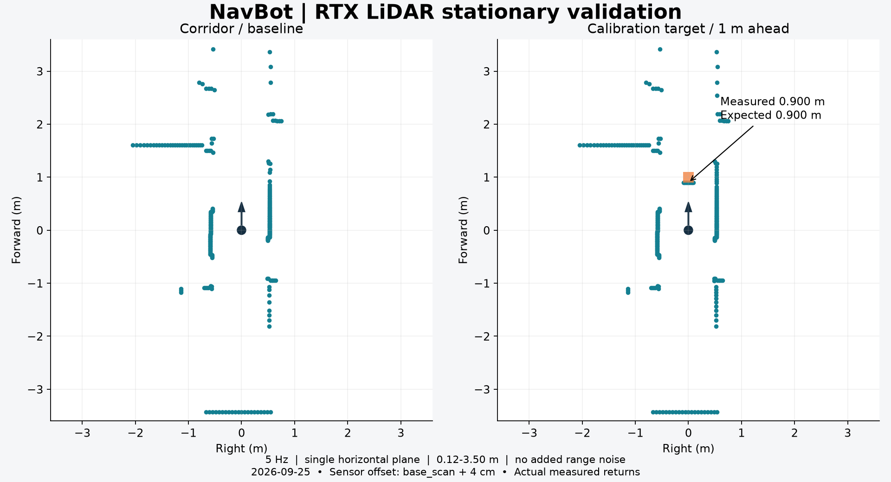
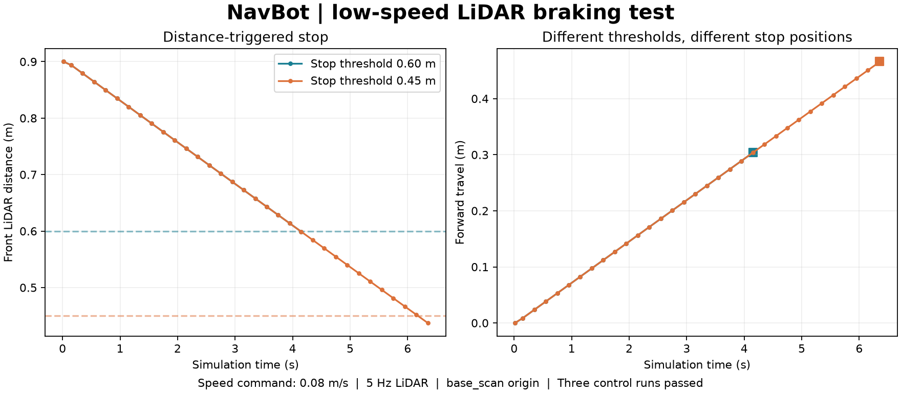

从空数据到有效扫描
初始遇到 Hydra engine 配置不匹配和空输出。启动时启用 Motion BVH，统一 viewport tickRate=0 并保留同步渲染设置；重启后默认传感器输出成功。自定义单线 channelId 改为 [1] 后完成扫描。未用单变量实验拆分所有启动设置的因果关系。
DEVLOG · 2026.09.25 · RTX LIDAR / RULE-ONLY
从安装 RTX LiDAR、校准扫描方向与近距离返回，到遇障停车，再用同一个控制器完成六轮固定导航测试。五种布局到达目标，完全堵路时主动停车。

恢复 visual mesh 后的 NavBot：传感器与机器人在同一走廊场景中工作。
01 / MOUNT THE SENSOR
在独立 navbot_lidar_test.usda 中添加真实 RTX LiDAR，挂在 base_link / base_scan 下。基于 NVIDIA Example_Rotary 配置生成本地 navbot_planar_lidar.usda，展开引用后不再依赖在线传感器文件。
配置为单水平扫描面、5 Hz、每圈 360 个名义发射角、标称 0.12–3.5 m 量程，本轮不加噪声。初始安装额外抬高 4 cm，随后校准恢复到 URDF 的 base_scan 原点；这是仿真坐标对齐，不是真实硬件标定。
通过 LidarSensor 读取 Generic Model Output，等待完整扫描并按 frameId 排除重复帧。返回有效命中点不一定有 360 个：先归入一度距离槽，再压缩为 36 个扇区最小距离。RTX 读取可见几何，不能等同于 PhysX collision raycast。
02 / CALIBRATE BEFORE DRIVING
机器人静止，在雷达前方 1 m 放置边长 0.2 m 的方块。预期前表面距离 0.900 m，实测 0.899998 m。之后独立检查左侧 +90° 和右侧 −90°：两个 0.300 m 目标均通过。

初始静态扫描与前方已知距离校准；这一步只验证了 0.9 m，不能证明整个量程有效。
初始遇到 Hydra engine 配置不匹配和空输出。启动时启用 Motion BVH，统一 viewport tickRate=0 并保留同步渲染设置；重启后默认传感器输出成功。自定义单线 channelId 改为 [1] 后完成扫描。未用单变量实验拆分所有启动设置的因果关系。
只设 nearRangeM=0.12 不够。本次发现 minDistBetweenEchosM 默认 0.4，改成 0.01 m 并重载场景后，0.3 m 左右目标返回正常。修正保存在 navbot_lidar_stop_test.usda 层；不要把初始静态场景当成最终配置。
机器人位姿与 mesh 仍在，visual 实例渲染异常。将四个 visual 根节点的 instanceable 关闭后恢复显示，修改保存在共享测试层，未修改原机器人资产。红色小块是 camera_link 外观，不是 LiDAR；绿色点才是扫描调试显示。
03 / SCAN → STOP
取前方 ±10° 的最近有效距离，以 0.08 m/s 低速前进。无校准方块时 2 s 前进约 0.147 m；停车阈值分别设为 0.60 m、0.45 m，最终雷达到目标表面的距离约 0.596 m、0.434 m。发出制动指令后移动均不到 1 mm。

方向校准与两个阈值的遇障停车测试：距离从雷达原点计算，不是机器人外壳净空。
5 Hz 扫描会带来离散采样延迟，因此停车距离可能略低于阈值。超过 0.6 s 没有新扫描会归零并报错，这是代码保护；本轮没有专门注入断流故障验证。
05 / REPLAY & RECORD
下载包含四份实际使用的 Python 脚本，以及安装、停车、导航的说明。依赖本项目既有 USD 场景与 Prim 层级；不包含机器人、房间或完整传感器资产，并非任意电脑一键运行的项目。
本地使用 launch_lidar_sync.ps1，等待场景和 shader 加载。启动设置和扩展要求见下载包 README；Python Server 是远程执行通道，直接使用 Script Editor 不要求它。
File → Open 初始 LiDAR 场景，Window → Script Editor 载入 navbot_lidar_test.py，Run。方向与近距修正测试则打开 navbot_lidar_stop_test.usda，运行 navbot_lidar_stop.py。校准方块由脚本创建，测试中回到起点属于重置。
先保存编辑，再在本项目场景中运行 navbot_navigation_suite.py。它会切换场景、覆盖同名测试层和报告，完成后暂停。只跑一轮的方法见 navigation-suite.md。不要同时运行其他控制脚本。
本轮使用 Kit capture_viewport_to_file，在控制循环中约每 0.2 s 采集一帧，同时记录仿真时间。另运行 encode_navigation_suite.py，通过 FFmpeg 按时间戳编码为 25 fps 容器；重复帧不代表采集达到 25 Hz。每轮末尾保留约 1 s。与上一篇的 Movie Capture 录制脚本是不同路径。
下一步计划扫描训练锥、书本等家中物品，经 Agent → Blender → sim-ready asset 流程进入 Isaac Sim，再扩展重复测试。当前控制器是新建的局部规则基线，没有接入原 Gazebo PPO、ROS2 或 SLAM；角度采样与 78 维时序观测仍需对齐。本轮不代表随机布局、动态障碍或定位误差下都可靠。
下一篇：扫描资产与 200 球碰撞 →